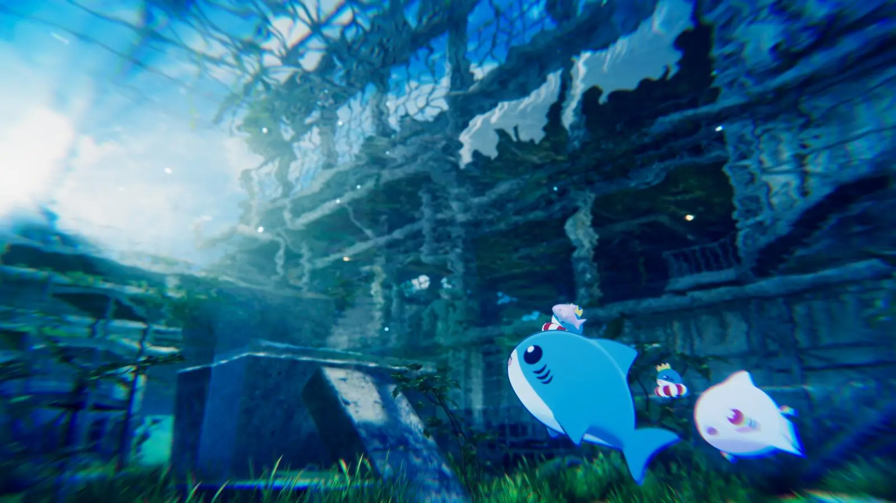
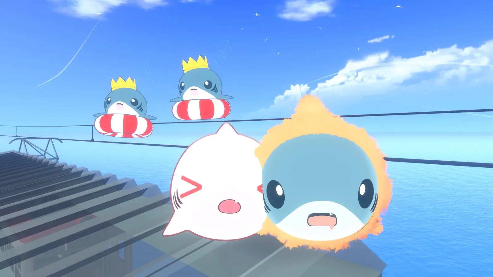

LIVE ARCHIVE / 08.24本日の王国風景8.5秒ごとに海流が変わります
NAOKING KINGDOM / GATE 00
00 THE KINGDOM GATE / 深度 1,280M
ここは、なおキングダム。
VRChatの海から現れたサメ、なおキングが統べる非公式の深海王国。映像と神託と、意味のない威厳を静かに配信中。
GATE KINGDOM TELEMETRY


国王の機嫌とは関係ありません。
ただし、ヒレはしまっておけ。
王 / 案内役 / 責任は取らない
DAILY ROYAL AUDIENCE
日付が変わると、潮の機嫌と王のひとことも変わります。七日分の謁見印を集めると、少しだけ偉い。
海流を測定しています。
本日の謁見印は、まだ受け取っていません。
MAP EXPLORE THE COURT
静かな記録庫から、騒がしい神託装置まで。好きな深度へどうぞ。
INDEX SUBJECT 001
見た目は王国の公式サイト。中身は、サメが運勢を決めたり、入会方法を忘れたりする場所です。
01 ROYAL MOTION ARCHIVE
なおキングダムで起きた出来事を、記録係が逃げ出す前に保存しています。
映像は存在する。完成日は深海に沈んでいる。
戻り次第、過去映像の整理を始める予定。
02 THE SOVEREIGN ORACLE
結果は一度だけ確定し、王国の演出装置を経てあなたへ届きます。連打は王への反逆です。
JUDGMENT SYSTEM / READY
ボタンを押せ。なおキングが、あなたの都合を見ずに今日の運勢を決める。
※ なおキングは結果に責任を取りません。王なので。
03 ROYAL HUNTING GROUND
魚を食べ、コンボを繋ぎ、王冠でフィーバー。網と岩は王様にも平等に危険です。
ABYSSAL HUNT
王様、自力で魚を取る。矢印キー / A・D / 画面ボタンで移動小魚 +12 / マグロ +28 / 真珠 +42 / 王冠 +100・フィーバー。コンボとフィーバーで得点倍率が上がります。
04 ROYAL MATERIAL OFFERING
あなたが撮影した王国の記録を、動画素材としてなおキングへ献上できます。
CREATOR TOOL ROYAL FRAME STUDIO
写真はブラウザの中だけで加工され、アップロードされません。三つの王国フレームから選んで保存できます。
写真を選ぶと、ここに王国記録が現れます。
05 ROYAL DECREE / DOCUMENT 404
王国の公式記録によれば、入会には所定の手続きが必要です。所定の意味は非公開です。
門の所在地は非公開です。門が存在するかどうかも、現在確認中です。
所定の者は不在です。帰還予定は「所定の時刻」と記録されています。
ここまで読んだ者は、たぶん入会できています。王への報告は不要です。